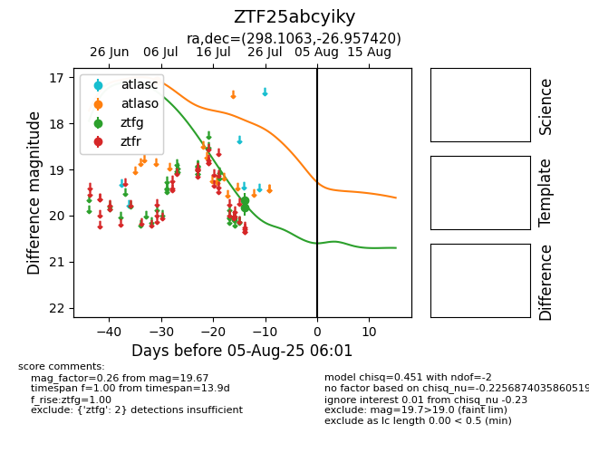

Target ZTF25abcyiky at 2025-08-05 06:01, see:
FINK: fink-portal.org/ZTF25abcyiky
Lasair: lasair-ztf.lsst.ac.uk/objects/ZTF25abcyiky
ALeRCE: alerce.online/object/ZTF25abcyiky
alt names
ZTF25abcyiky (ztf,fink)
coordinates:
equatorial (ra, dec) = (298.1063,-26.95742)
galactic (l, b) = (13.9045,-24.53989)
photometry
last atlaso=17.07, ztfg=19.67
1 atlaso, 2 ztfg detections
